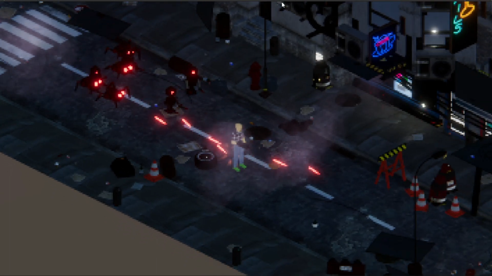

Dev blog 2023-03-22
This week I started the course, I am excited for the project.
Yesterday, our group convened for the first time and we had the
opportunity to introduce ourselves. Furthermore, we established a
brainstorming channel within our group chat, and group members have
been actively posting numerous project proposals. We have scheduled
a meeting for tomorrow where we intend to discuss the ideas further.
Dev blog 2023-03-26
This week we had a lecture about the game design document(GDD). It should contain a
concept description, a technical description, target group, business plan. With
the different points you should have a motivation and market analysis.
The GDD is a living document and should be updated as the project progresses.
A takeaway from the lecture is that we should have a name for the game since it
will give the game an identity. So I will push for getting a name for the game.
Next week we will have the project pitch so we will have a meeting on Thuesday to
decide on a game idea and start working on the presentation.
Dev blog 2023-04-02
This week we worked on the game concept. We decided on a game where you play as a cyborg
and you have to fight Robots and steal their parts to upgrade yourself. The game will be
in orthographic top down view. We also decided on a name for the game, it will be called
TechnoScourge: Rise of the Adaptive.
I created a unity project with a basic scene and a player controller. I added a character
that can move around with a top down view and orthographic camera. I also started doing
some 3d animation. Other group members have been working on concept art. Some have been
using AI art and some have been drawing by hand.
Next week we will work on the early demo. I will continue to work on movement and animation. I
will also work on the texturing of the character. Bellow is a cool logo for the game created by
another group member and the super early demo created by me.
Dev blog 2023-04-15
This week I have been working on the players movement. One feedback we got from the
demo was that the movement with the arrowkeys was too yanky and you could not aim at certain
angels. So I changed the movement so that the player looks at the mouse. And you can move in all
directions with the arrow keys while aiming at a point. However this breaks the animations
so I will have to update them. Others on the team have been working on the inventory system
and stats for the player.
Dev blog 2023-04-25
This week I have continued work on the player movement. I could unfortunately not attend the
feedback session with the course examiner last monday but the group got some great feedback.
We have a clearer goal and know what are the most important features that we need to imlplement.
We looked at the competitors and agreed that the most fun features in thoose games are the
item systems and trying out different combinations. So we will focus on that for the final demo.
Another group memeber also implemented a shader that I thought was realy cool. You can see
the picture bellow of the result.

Dev blog 2023-05-19
Since the last blog we took to hart what was said in the feedback session and decided to focus
on the item system. Some other group members have been working on the inventory system and i
have been working on the drops from the enemies. I wanted to base it on the drop system from
the Diablo games since it was one of our
inspirations both artisicly and gameplay wise. In Diablo
the items are laying on the ground and you can click on them to pick them up.
However beacuse of the time constraint and that I wanted the player to be able to continue
fighting the hordes of enemies and not have to stop to click on stuff. I decided to make it so that
the drops are picked upp automaticly when you walk over them. I also added a cool bloom effect to them
so that they could be easily spotted by the player.
Dev blog 2023-05-22
This will probably be the last blog post. We are now mostly working on the GDD and
the final presentation so not a lot of game development is happening. Some in our group have also
had to go home because their next semester has started so that makes it harder to
coordinate the group. I have been mostly been responible for
writing the gameplay section of the GDD. The game project has been fun and I have learned a lot.
I think the most important learning experience for me was on how to present our game. The marketing
and thinking about target audience is not something you do a lot in the computer science program.
A lot of the technical stuff I have done before but it was fun to work on a bigger project with others.
Overall I have happy with the course and I will continue working on games in my free time.
I personally loved the orthographic
view that I did and I will probably use it in my future projects.